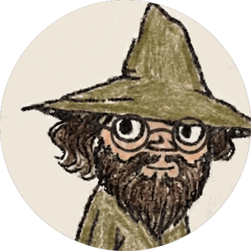
wander
I make small things, mostly for a little E Ink phone, and tinker with a few home servers that several of them talk to. They keep to themselves — no accounts, nothing sent to me, nothing that needs looking after. Most of the work is deciding what to leave out.
Nothing here is for sale. If you would like to give something anyway, some llamas go through a great deal of hay. Something broken? Open an issue, or write to email@wanderthe.dev.
小さなものを作っている。ほとんどは小さな電子ペーパーの電話のためのもので、そのいくつかがやりとりする家のサーバーも少しいじっている。どれも自分のことだけをする——アカウントも、私に送られるものも、世話の要るものもない。仕事の大半は、何を省くかを決めること。
ここにあるものは売り物ではない。それでも何か贈りたければ、ラマたちが干し草をたくさん食べている。壊れているところがあれば、issueを開くか、email@wanderthe.devまで。
For the Mudita Kompakt
The Kompakt is an Android phone with a black-and-white E Ink screen that redraws slowly. Everything here is drawn for that screen, so nothing animates and every page can be read in sunlight.
Everyday
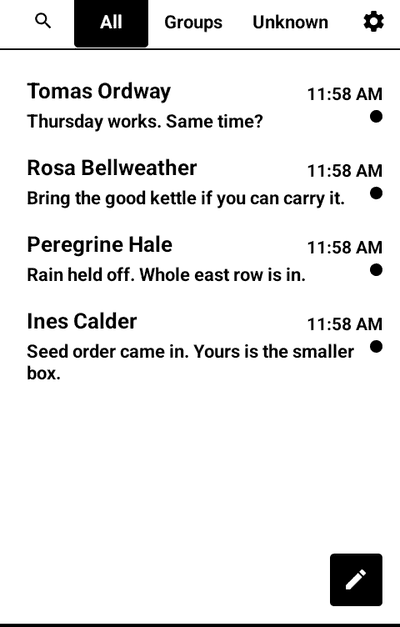
Messaging
SMS, MMS and Signal in one inbox, and a page your phone serves to your own computer so you can text from a keyboard. With Glance, what is unread on the lock screen.
SMS・MMS・Signalをひとつの受信箱に。電話が自分のパソコンにページを出すので、キーボードからも送れる。一目と使えば、未読がロック画面に。
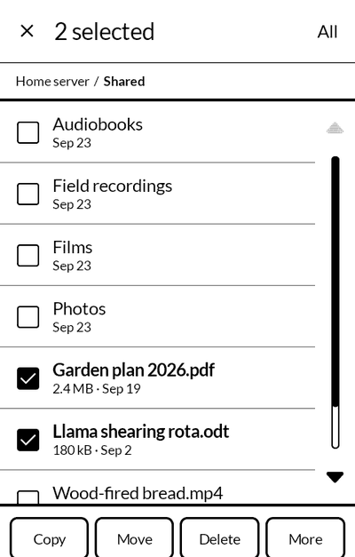
Files
A file manager, with the shared drives on your own servers as places like any other. Choose several things at once; a copy is written whole or not at all.
ファイル管理。自分のサーバーの共有ドライブも、ほかの場所と同じように並ぶ。いくつも一度に選べて、コピーは丸ごと書かれるか、まったく書かれないかのどちらか。
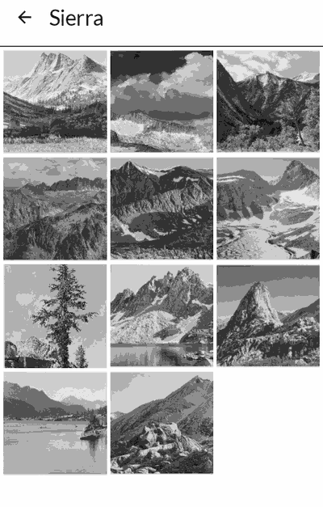
Gallery
The pictures on the phone, by folder, one at a time. Tap either side to turn the page; a photo from Files or the camera opens inside its folder.
電話の中の写真を、フォルダごとに一枚ずつ。左右をタップしてページをめくる。棚やカメラから渡された写真は、そのフォルダの中で開く。
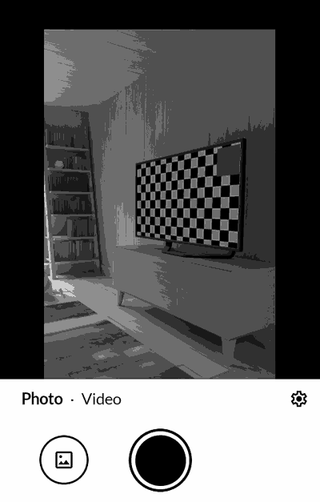
Camera
Photos and video laid out as Mudita's own camera is, with QR codes read as you point. Open Camera underneath; nothing drawn over the viewfinder.
写真と動画。画面の配置はMudita純正のカメラと同じ。QRコードは向けるだけで読む。中身はOpen Camera。ファインダーの上には何も描かない。
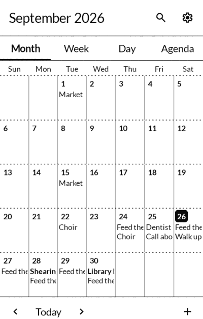
Calendar
Month, week, day and agenda, with repeats of every ordinary shape and reminders that light the screen. Your Nextcloud or other CalDAV calendar, through DAVx5. With Glance, today's events on the lock screen.
月・週・日・予定一覧。ふつうの繰り返しはどんな形でも組め、通知は画面を灯す。NextcloudなどのCalDAVカレンダーを、DAVx5を通して。一目と使えば、今日の予定がロック画面に。
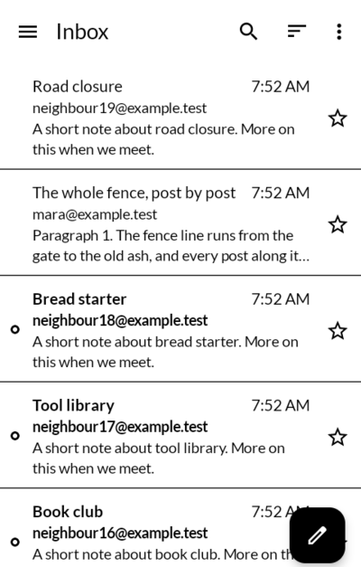
Any mail account that takes a password, read and written in black and white, a page at a time. Thunderbird for Android, redrawn for this screen. With Glance, what is unread on the lock screen.
パスワードで入れるメールアカウントなら何でも、白黒で、一画面ずつ読み書きする。Thunderbird for Androidを、この画面のために描き直したもの。一目と使えば、未読がロック画面に。
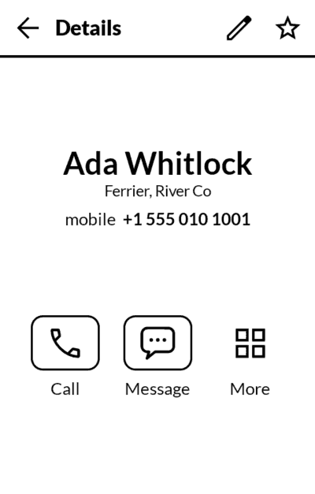
Contacts
Everyone you know, drawn like the phone's own address book: Call and Message under every name, the rest a press away. Messaging and Email reach it for every contact they need.
知り合いみんなを、電話に元からある連絡帳のように。どの名前の下にも「通話」と「メッセージ」、ほかはひと押し先に。言伝も便りも、連絡先が要るときはここに来る。
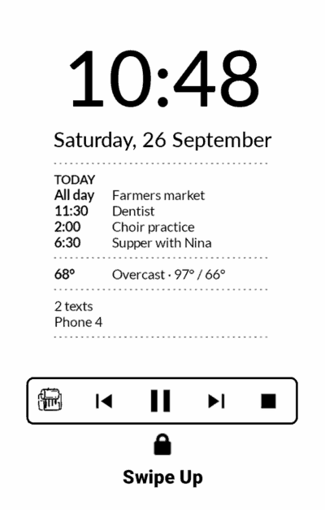
Glance
Today's events, the weather and what is unread, on the lock screen, from Calendar, Sky, Messaging and Email. Press a line to open its app.
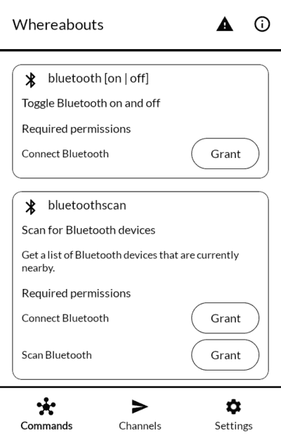
Whereabouts
Finds your phone when it is lost: where it is, a ring, a lock. With its server, the people who share with you appear on one map.
なくした電話を探す。どこにあるか、鳴らす、ロックする。専用のサーバーがあれば、共有してくれる人たちがひとつの地図に現れる。
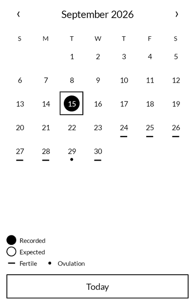
Cycle
A cycle tracker with no permissions at all. It shows what you recorded, expects what comes next, and keeps everything you write on the phone.
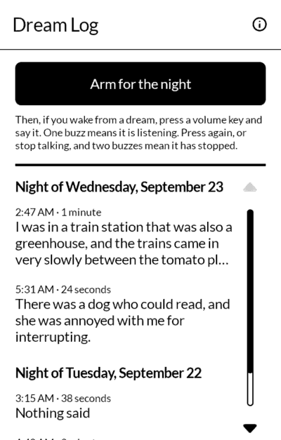
Dream Log
Arm it before sleep; if a dream wakes you, press a volume key in the dark and say it. By morning it is written down, transcribed on the phone itself.
眠る前に構えておく。夢で目が覚めたら、暗がりで音量キーを押して話すだけ。朝には書き起こされている。文字起こしは電話の中で。
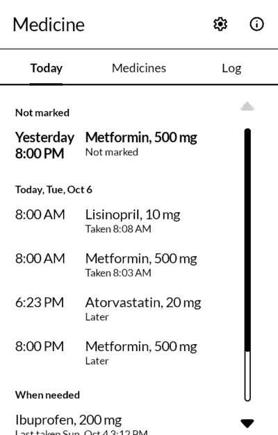
Medicine
Reminders that ring at each dose, answered from the lock screen with Taken, Skip or Snooze. Every dose goes into a log, rung or not, and a refill can go into Calendar.
服薬の時間ごとに鳴るリマインダー。ロック画面のまま「飲んだ」「飛ばす」「あとで」。鳴っても鳴らなくても、すべての服用が記録に残る。補充の日は暦へ。
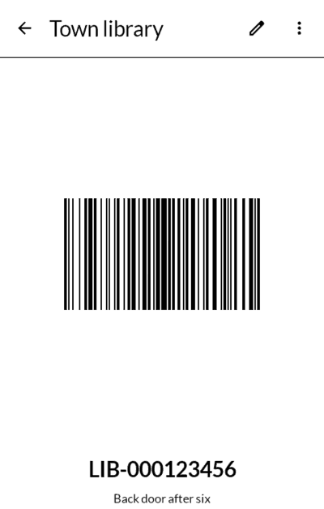
Wallet
Loyalty and library cards, tickets and boarding passes, drawn as barcodes a scanner reads off this screen. Scan one in, or read it from a picture, PDF or pass file. Catima underneath.
ポイントカード、図書館カード、切符、搭乗券。読み取り機がこの画面からそのまま読めるバーコードで描く。カメラで読み込むか、写真・PDF・パスファイルから。中身はCatima。
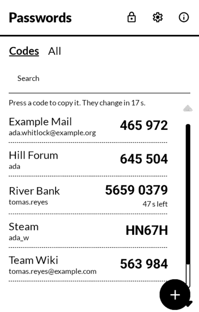
Passwords
Sign-ins and their two-step codes in a KeePass file, the same one KeePassXC opens on a computer. Press a code to copy it; fill sign-ins in other apps. No internet.
ログイン情報と二段階認証のコードを、KeePassファイルに。パソコンのKeePassXCで開くのと同じファイル。コードは押せばコピー。ほかのアプリのログインも埋める。インターネットなし。
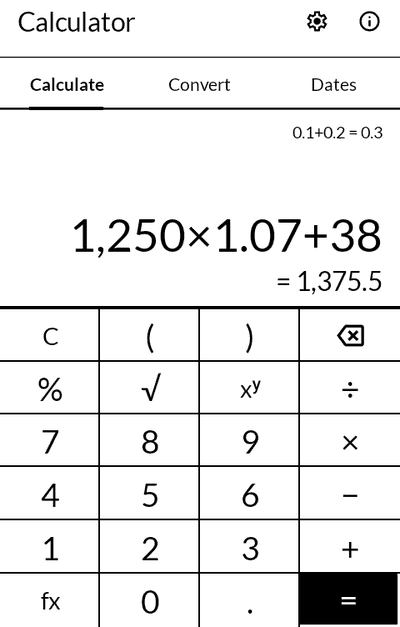
Calculator
Sums with brackets and the scientific functions a page away, a graph of up to three curves, and a programmer's calculator in four bases. Converts 24 kinds of unit, currency included, and counts days between dates. Unitto underneath.
かっこ付きの計算、一枚めくれば関数電卓。曲線三本までのグラフと、四つの基数を並べるプログラマ電卓。単位換算は通貨を含めて24種、日付の間の日数も数える。中身はUnitto。
Reading, writing, listening
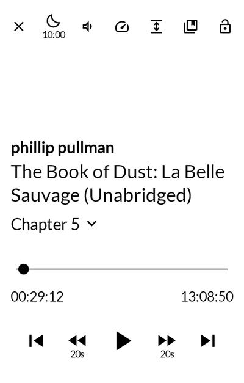
Audiobooks
An audiobook player. Point it at a folder of books, tell it once how they are laid out, and it keeps your place in each one.
オーディオブックのプレーヤー。本のフォルダを指し、並び方を一度教えれば、一冊ごとに読みかけの場所を覚えている。
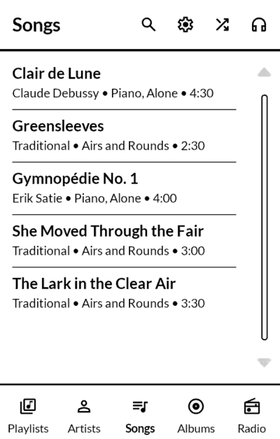
Music Box
A music player for a folder of your own music, a music server you run, internet radio and YouTube Music. A song you download stays on the phone.
音楽プレーヤー。自分の音楽のフォルダ、自分で動かす音楽サーバー、ネットラジオ、YouTube Musicに。ダウンロードした曲は電話に残る。
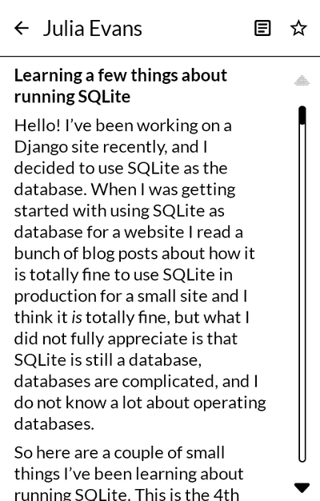
Feeds
Feeds read as plain text, with Gemini, gopher and Spartan alongside them; fetched on wifi, read with the radio off. The volume keys turn the page.
フィードを素のテキストで読む。Gemini・gopher・Spartanも並べて。取り込みはWi-Fiで、読むのは電波を切ってから。音量キーでページをめくる。
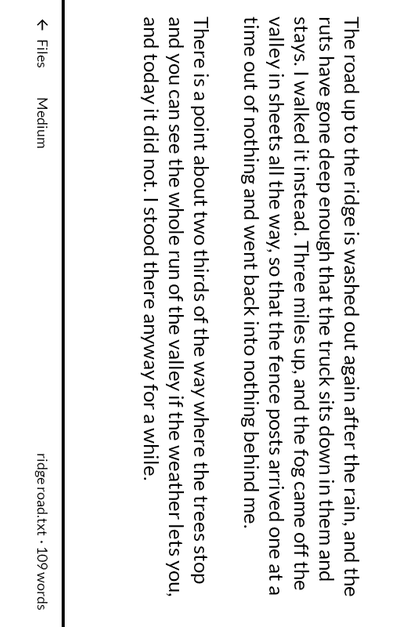
Typewriter
A text editor that opens in landscape and stays there, for writing with a keyboard connected to the phone. What you write is plain text, in a folder you choose.
横向きで開き、ずっと横向きのままのテキストエディタ。電話につないだキーボードで書くためのもの。書いたものは素のテキストで、選んだフォルダに。
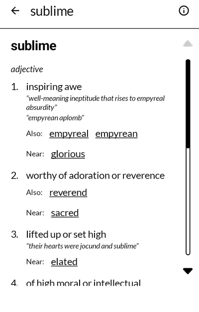
Dictionary
An English dictionary and thesaurus in the menu over selected text, in any app. Press another word and it goes back into what you were writing. Offline.
英語の辞書と類語辞典。どのアプリでも、選んだ文字の上のメニューから開く。別の言葉を押せば、書いていた文にそのまま戻る。オフライン。
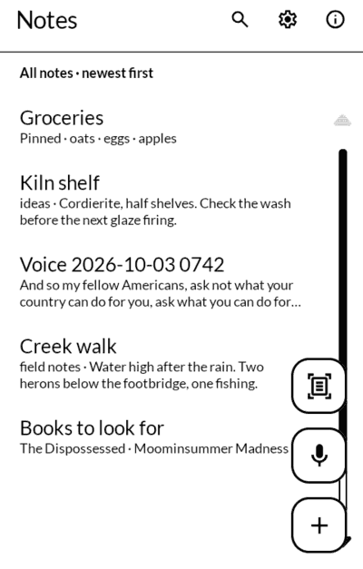
Notes
Notes, lists, voice notes and scanned pages, kept as plain Markdown files on your own Nextcloud or on the phone. A shared list can be ticked on one phone while added to on another.
メモ、リスト、音声メモ、紙の読み取り。ただのMarkdownファイルとして、自分のNextcloudか電話の中に。共有したリストは、片方の電話で印をつけながら、もう片方で書き足せる。
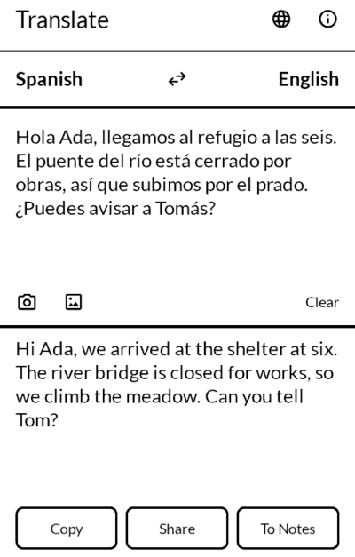
Translate
Translation between English and 59 languages, on the phone, in the menu over selected text beside Dictionary. Words in a picture too. Each language downloads once; nothing translated leaves the phone.
英語と59の言語のあいだの翻訳を、電話の中で。選んだ文字の上のメニューから、字引の隣に。写真の中の文字も。言語はそれぞれ一度だけダウンロード。訳す文は電話の外に出ない。
Outdoors
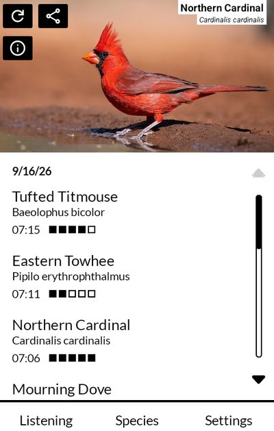
Birding
Names the birds it hears, offline, with BirdNET running on the phone itself. A bird's Wikipedia page is a press away, opened in your browser.
聞こえた鳥の名前を告げる。オフラインで、BirdNETは電話の中で動く。その鳥のWikipediaのページはひと押しで、ブラウザに開く。
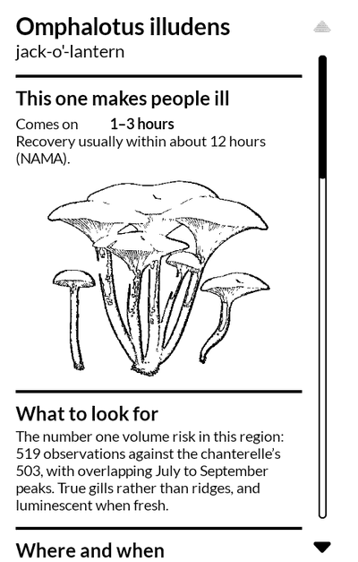
Mushroom Journal
Write a mushroom down while you are standing over it, and work out at home what it might be. It narrows a list, never decides, and says nothing about eating one.
きのこの前に立ったまま書き留め、何なのかは家でゆっくり考える。候補を絞りはするが、決めはしない。食べられるかどうかには一切触れない。
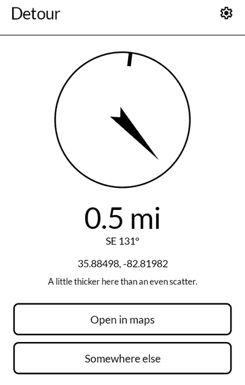
Detour
Press once and it picks somewhere near you to walk to, with no particular reason to go there, and gives you an arrow and a distance to follow.
一度押せば、近くのどこかを歩いて行く先に選ぶ。そこへ行く理由は特にない。あとは矢印と距離に従うだけ。
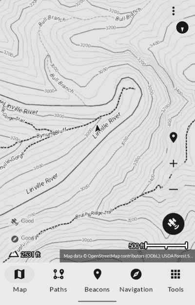
Topo
Maps for walking off the road: contours, trails, forest roads, public land and lot lines, all offline once an area is downloaded. A track you walk goes to CalTopo as a file.
道を外れて歩くための地図。等高線、山道、林道、公有地、地番の境界。地域を一度ダウンロードすれば、すべてオフラインで。歩いた軌跡はファイルにしてCalTopoへ。
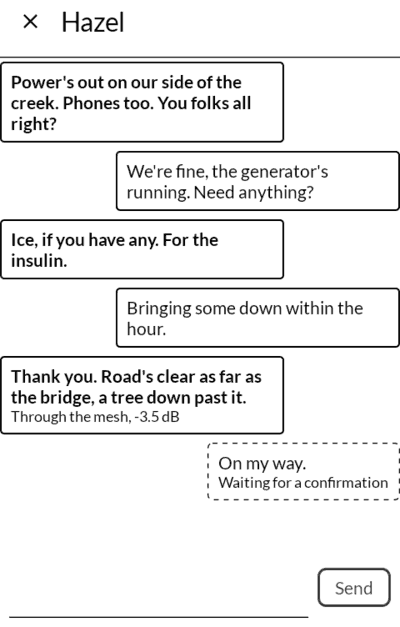
Mesh
A companion for a MeshCore LoRa radio. Messages go over Bluetooth to the radio beside you and out through a mesh that needs no towers, no carrier and no internet.
MeshCoreのLoRa無線機のための相棒。メッセージはBluetoothで手元の無線機へ、そこから鉄塔も通信会社もインターネットもいらない網へ。
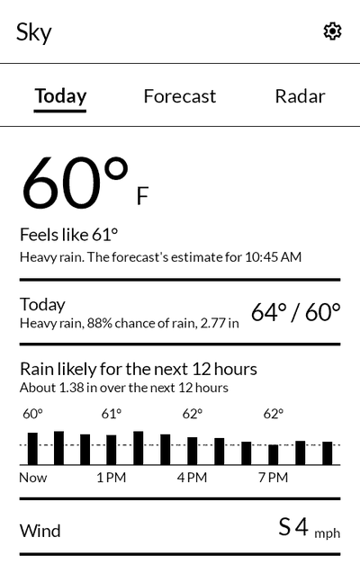
Sky
The days ahead, the rain radar, and your own weather station if you have one. It says no more than the station and the forecast know. With Glance, the weather on the lock screen.
この先の数日、雨雲レーダー、それに自分の気象観測装置があればそれも。観測と予報が知っている以上のことは言わない。一目と使えば、天気がロック画面に。
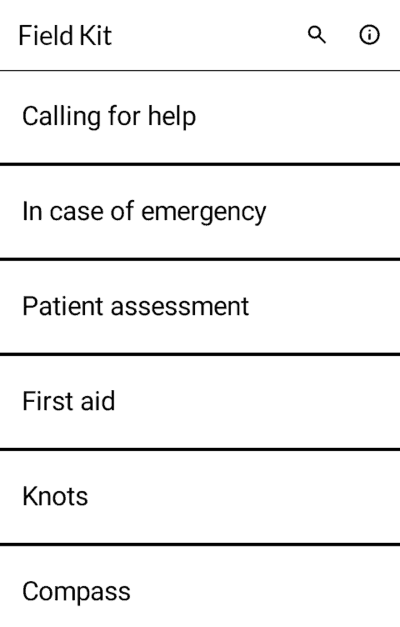
Field Kit
First-aid pages that open on what to do now, a patient assessment in the words the courses use, twelve knots, a compass with your position, and an emergency card Glance can show. No internet.
「まず何をするか」から開く救急のページ、講習の言葉どおりの傷病者評価、結び十二種、現在地つきのコンパス、一目に出せる緊急カード。インターネットなし。
Instruments
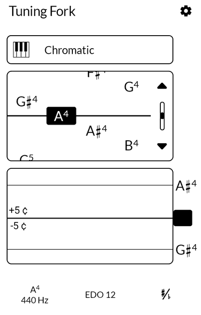
Tuner
A tuner, chromatic or by instrument, with a pitch plot, a cents readout and temperaments well past equal. The screen stays awake while you play.
チューナー。クロマチックでも楽器ごとでも。音高のグラフ、セント表示、平均律のはるか先までの音律。弾いている間、画面は消えない。
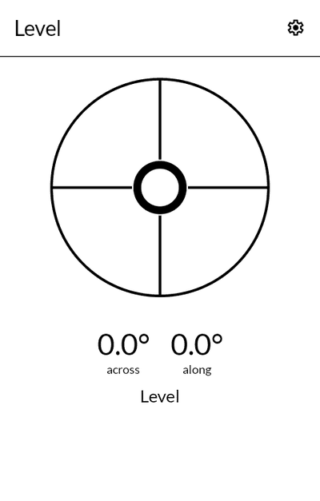
Level
A spirit level that knows whether it is lying flat or standing on an edge, and shows the right vial for each. It says level only when it is.
平らに置かれているか、縁で立っているかを自分で知り、それぞれに合った気泡管を見せる水準器。水平と言うのは、本当に水平のときだけ。
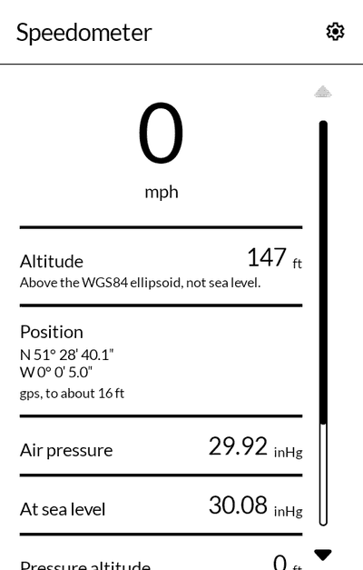
Speedometer
How fast you are going, how high you are, and what the air is doing. Press the speed and it fills the screen. Not accurate enough to navigate by.
どれだけ速く進んでいるか、どれだけ高いところにいるか、空気がどうしているか。速度を押せば画面いっぱいに。道案内に使えるほど正確ではない。
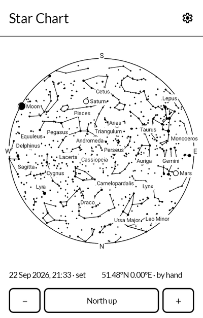
Star Chart
The sky over you, drawn the way a paper star atlas draws it, black on white. Set any moment and any place to see what will be up.
頭上の空を、紙の星図のように白地に黒で描く。好きな時と場所を決めれば、何が昇っているかが見える。
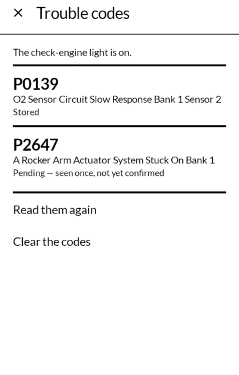
Car Check
What the check-engine light is on for, read through a Bluetooth OBD-II adapter. Each code says whether it is stored or only pending, and clearing them tells you when the car refuses.
エンジン警告灯がなぜ点いているのかを、Bluetooth OBD-IIアダプタで読む。コードごとに記録済みか保留中かを示し、消去を車が拒んだときはそう伝える。
Games
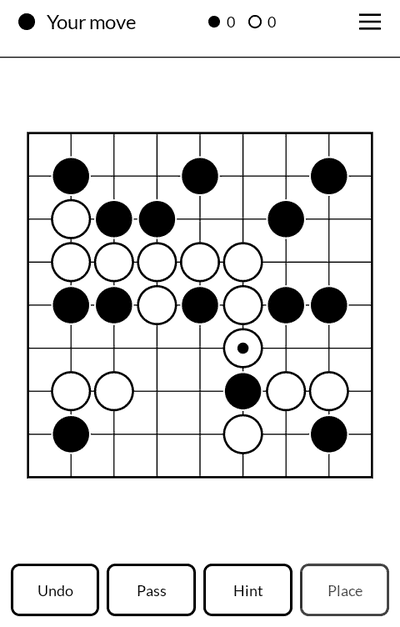
Go
A game of Go on a 9×9 board, against GNU Go or the person opposite, with handicaps, a hint when you want one, and the board counted at the end.
九路盤の碁。相手はGNU Goか、向かいに座る人。置き碁、欲しいときのヒント、終局には盤面を数える。
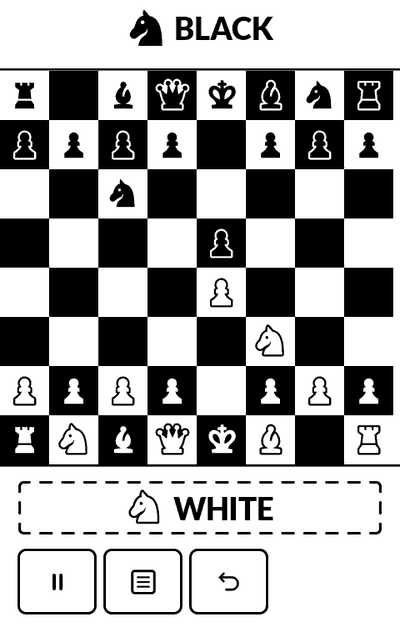
Chess+
The phone's own chess app, with a second player added: two people on one board, passing the phone back and forth between moves.
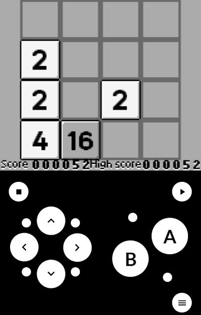
Handheld Games
Game Boy games, drawn in four greys for a screen that has no colour. The picture lands at exactly three times size, so nothing is resampled.
ゲームボーイのゲームを、色のない画面のために四階調の灰色で。絵はきっかり三倍の大きさに収まるので、何も補間されない。
Stop motion
One app for Android phones: the capture half of a stop-motion practice. The film is put together elsewhere.
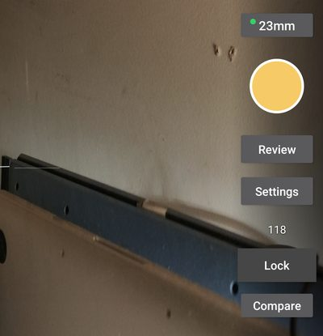
Stop Motion
Stop-motion capture for Android phones; on the Xiaomi 17 Ultra it reaches all three rear lenses where other apps find one. The exposure locks for the whole film, with onion skin, drawn guides and an interval timer.
Androidの電話のためのコマ撮り。Xiaomi 17 Ultraでは、ほかのアプリが一つしか使えない背面の三つのレンズすべてに届く。露出は作品全体を通して固定。オニオンスキン、描き込めるガイド、インターバルタイマーつき。